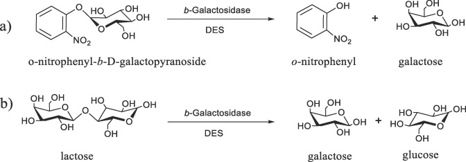

These are the cells you are using. Invitrogen sells them as a cloning strain and the selling points are the ones listed: ready for blue-white screening, resistant to the phages that most often contaminate a lab, and fast. Note the last line, because it is the one that matters for the next few slides: Mach1 is not a K-12 strain.
Mach1, its genotype, and what Invitrogen sells it on: lacZ-alpha complementation ready, resistant to T1, T5 and phi80, a doubling time of about fifty minutes, and derivation from E. coli W rather than K-12.
Our chassis
Mach1
str. W ΔrecA1398 endA1 fhuA Φ80Δ(lac)M15 Δ(lac)X74 hsdR(rK– mK+)
The organism the strain was derived from. Default is MG1655 — so when it is stated, it is because it is not.
Mach1 came from E. coliW (ATCC 9637), a natural isolate distinct from MG1655
E. coli W has been sequenced — GenBank CP002185.1
No public genome sequence is available for Mach1
The first token is the parent. A genotype is a list of differences from a reference, and the reference is MG1655 unless someone tells you otherwise. Here someone has told you otherwise: Mach1 descends from E. coli W, a natural isolate that is not K-12. W has been sequenced and you can go and read it. Mach1 has not, publicly, so everything past the first token is a claim about differences from a genome you can read, applied to a strain you cannot.
The same genotype with the first token, str. W, picked out: the parent organism. The default parent is MG1655, so naming one means it is not MG1655. E. coli W is sequenced as GenBank CP002185.1, but no public genome sequence exists for Mach1 itself.
Our chassis
Mach1
str. W ΔrecA1398 endA1 fhuA Φ80Δ(lac)M15 Δ(lac)X74 hsdR(rK– mK+)
Each space-separated token is one specific mutation, relative to that parent
These were introduced on purpose, to make a robust cloning strain that is also
usable for industrial production
Everything after the parent is a list of deliberate modifications. None of these happened by accident and none of them is there to make the organism better at living. They are there to make it better at the job.
The genotype with everything after the parent picked out: each space-separated token is one specific mutation relative to the parent, introduced deliberately to make a robust cloning and production strain.
Our chassis
Mach1
str. W ΔrecA1398endA1 fhuA Φ80Δ(lac)M15 Δ(lac)X74 hsdR(rK– mK+)
The same three you saw on DH10B, and for the same three reasons
recA — plasmid stability: no recombination between repeats in your construct
endA — plasmid purity: no endonuclease chewing your miniprep
hsdR — transformation efficiency: incoming DNA is not restricted
Three of these are the standard cloning-strain mutations and you have already met them on DH10B. They are about plasmid stability, plasmid purity and transformation efficiency, in that order. Note hsdR specifically: r minus m plus means restriction is off but methylation is on, so the strain will not cut your incoming DNA, but it will still methylate what it keeps, which matters if you then move that DNA into something else.
The genotype with recA1398, endA1 and hsdR picked out: the three standard cloning-strain mutations, for plasmid stability, plasmid purity and transformation efficiency.
Our chassis
Mach1
str. W ΔrecA1398 endA1 fhuA Φ80Δ(lac)M15 Δ(lac)X74 hsdR(rK– mK+)
Δ(lac)X74 = deletion of the entire lac operon as well as some flanking DNA
This one takes out the whole lac operon and some of what is around it. Which raises an obvious question, since the strain is sold as ready for blue-white screening, and blue-white screening needs lacZ. Hold that thought for two slides.
The genotype with the lacX74 deletion picked out: a deletion of the entire lac operon plus flanking DNA, the complete form being delta cod to mhpF.
Our chassis
Mach1
str. W ΔrecA1398 endA1 fhuA Φ80Δ(lac)M15 Δ(lac)X74 hsdR(rK– mK+)
The cell carries the lambdoid prophage Φ80
A defective version of it carries the lacZΔM15 deletion, along with
wild-type lacI, lacYA and flanking sequence
The Φ80 attachment site sits just next to tonB
This is what makes lacZα complementation and blue-white screening work
And here is the answer. The lac operon was deleted from the chromosome, and then a piece of it was put back on a defective phi80 prophage, carrying a lacZ gene with the M15 deletion in it. That gene makes a beta-galactosidase that is broken on its own and can be rescued by a small fragment supplied in trans. That is lacZ-alpha complementation, and it is the basis of blue-white screening. Also worth noticing: this is the same phi80 attachment site you used for CRIM integration two lectures ago, and here it is being used as a place to park a gene. Same site, same logic, different purpose.
The genotype with the phi80 lacZ delta M15 token picked out: the cell carries a defective phi80 prophage bearing the lacZ delta M15 deletion along with wild-type lacI and lacYA, integrated at the phi80 attachment site next to tonB, and that is what makes lacZ-alpha complementation possible.
LacZ β-galactosidase

The enzyme itself: beta-galactosidase, which cuts lactose into glucose and galactose. Its natural job is letting the cell eat lactose. Its job in your hands is that it will also cut X-gal, and one of the products of that reaction is blue.
A diagram of beta-galactosidase hydrolysing lactose into glucose and galactose.
LacZα complementation
This is what the phi80 token on the genotype was for. The enzyme is in two pieces on two different molecules, and cloning breaks the small one.
LacZ-alpha complementation drawn out: the chromosome making a beta-galactosidase with a piece missing, the plasmid carrying that missing piece, the two associating into a working enzyme that cuts X-gal and turns a colony blue, and then an insert cloned into the middle of the alpha fragment so that nothing complements and the colony stays white.
Our chassis
Mach1
str. W ΔrecA1398 endA1 fhuA Φ80Δ(lac)M15 Δ(lac)X74 hsdR(rK– mK+)
FhuA in the outer membrane is a transporter for ferrichrome, for the antibiotics
albomycin and rifamycin CGP4832, and for colicin M
It is also the receptor for phages T1, T5 and Φ80
Knock it out and the strain is phage resistant — which is why it is on the list
FhuA is an iron transporter, and it is also the door those three phages use to get in. Take it away and they cannot. T1 in particular is the reason anybody bothers: it is tough, it spreads through a lab fast, and a T1 contamination can take out every culture on the bench. So this mutation is not about the biology of iron at all. It is insurance.
The genotype with fhuA picked out: FhuA is an outer membrane transporter for ferrichrome and certain antibiotics, and also the receptor for phages T1, T5 and phi80, so knocking it out makes the strain phage resistant.
Why Mach1?
Great for cloning, and for industrial-scale production
Phage resistant, and commercially available
Grows on sucrose as a feedstock
Reliably grows on minimal medium — sucrose and some salts — to high densities
Produces little acetate, a common loss of carbon at high titre
Increasingly mentioned in the literature
So why this one. The first two lines are why Invitrogen sells it. The rest are why it is a reasonable choice for this course rather than just a convenient one, and the middle two are the ones to pay attention to: it grows on minimal medium, which the standard cloning strains do not, and it wastes less carbon as acetate. Those are the properties of something you could scale.
Why Mach1: good for cloning and industrial production, phage resistant and commercially available, and then four more arriving one at a time — it grows on sucrose, grows reliably on minimal medium to high density, produces little acetate, and is increasingly used in the literature.
Two others worth knowing
BL21(DE3)
Lineage
E. coliB, not K-12
Use case
High-level protein expression, usually with T7 systems
Lacks lon and ompT proteases → better protein stability
Fast-growing in rich media
Tradeoffs
Harder to transform
recA+, endA+ → not good for cloning
High expression can be toxic
Biosafety
No known virulence factors · BSL-1
Nissle 1917
Lineage
Wild-type E. coli, not lab-adapted. Isolated in WWI as a
non-pathogenic competitor to harmful strains
Use case
Live biotherapeutics and gut microbiome studies
Key features
Fully tractable for engineering
Retains immune interaction pathways
Tradeoffs
Not attenuated — more robust than lab strains
Requires more biosafety oversight, especially clinically
Biosafety
Generally BSL-1, but caution for vulnerable populations
Two strains you will hear about. BL21 is what you use when the point is to make a lot of one protein: it carries T7 polymerase so a T7 promoter on your plasmid fires hard, and it has had two proteases removed so the protein survives long enough to purify. It is a bad cloning strain, recA plus and endA plus, so people keep their constructs in a cloning strain and move them into BL21 only to express. Nissle is the opposite end: a wild isolate taken from a soldier in the First World War because it outcompeted the pathogens, still sold as a probiotic, and now used as the chassis for engineered therapeutics that have to survive in a real gut. The tradeoff is right there in the description: it is good at living in people, which is the point and also the risk.
Two cards side by side. BL21(DE3): the E. coli B lineage, built for T7-driven protein expression, carrying T7 RNA polymerase and lacking lon and ompT proteases, but recA and endA positive so a poor cloning strain. Nissle 1917: a wild-type non-lab-adapted isolate from the First World War, used for live biotherapeutics, fully engineerable and retaining immune interaction pathways, but not attenuated and needing more biosafety oversight.